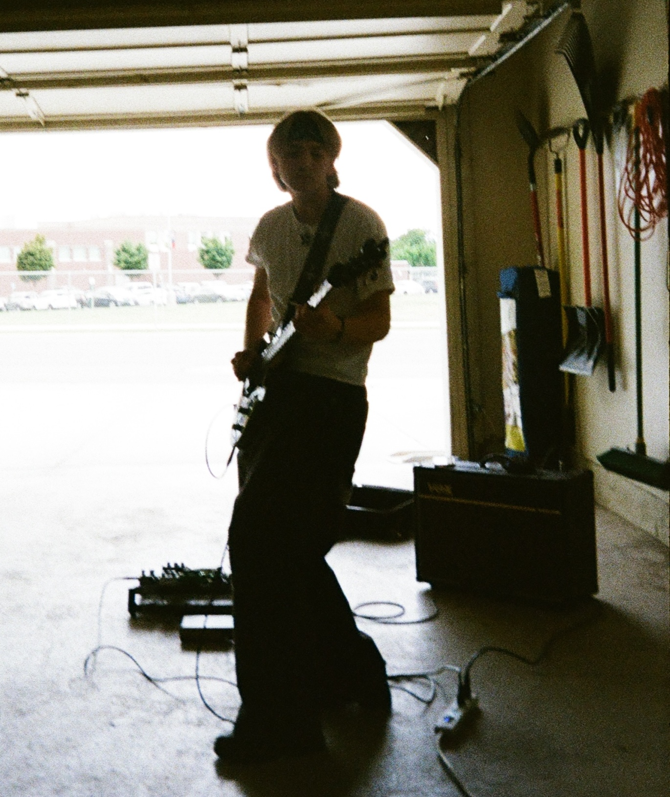
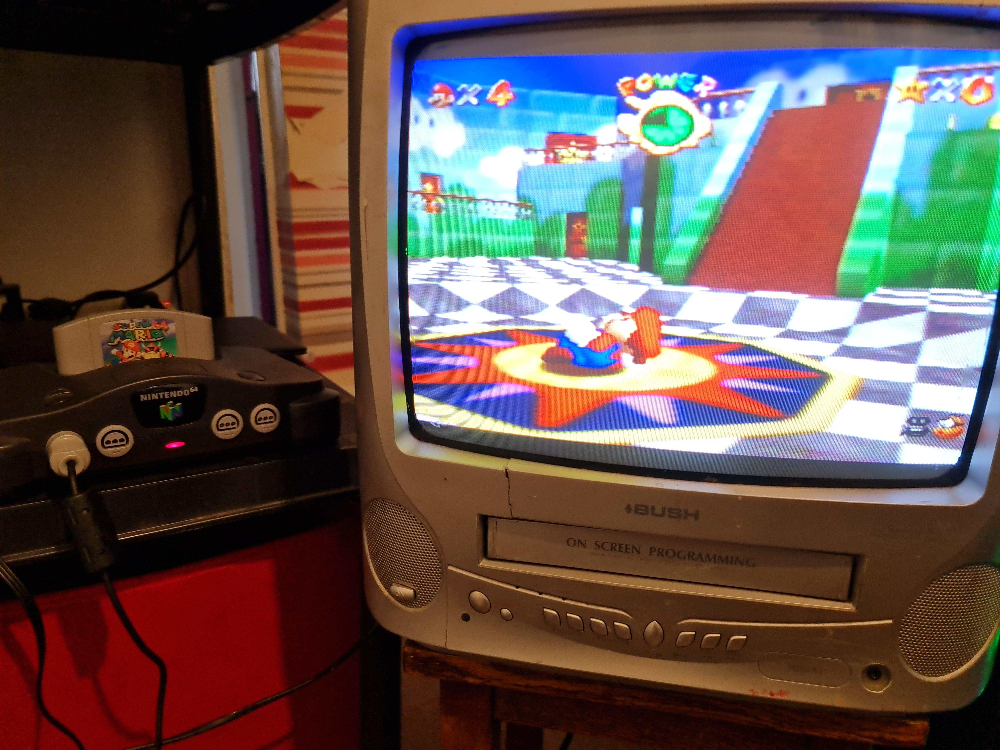

Meeting Britton Helquist
Opened:
Introduction
I am a 19 year old boy who was born in Lebanon, New Hampshire in 2006. I've been living in Provo, Utah for most of my life and have attended all years of my schooling in Provo. I have 4 siblings and I am the youngest in my family.
Hobbies

I really enjoy live music, listening to music, and playing the guitar. I have been playing the guitar for 2 years and have played in a handful of bands and venues. I hope to continue playing with bands while also persuing a profession in Cybersecurity.
I also love tinkering with electronics, whether its computers or electrical circuits in my guitar I think its really fun to build stuff. I have even soldered my own humbucker in an old guitar of mine.
Hanging out with friends on weekends and visiting random places is also another one of my favorite hobbies. I love going to new places with friends as well as joking around with them.
Interests
My interests definitely align a lot with my Hobbies in that I love technology and computers. I am a huge fan of retro video games and retro technology in general.

Me and one of my best friends Parley are into collecting retro video games and completing them to completion. Right now I'm working on completing Quake on the n64 and I'm currently trying to mod my favorite game; Majora's Mask.
I'm also very interested in science in general, but especially space. I really want to see space before I die and I am hoping that technology advances enough for that to become a possibility for me in the future. I love looking at the stars late at night in the mountains and finding the different constellations.
Education

I am currently a Freshman attending Brigham Young University and I am majoring in Cybersecurity.
I recieved my High school diploma from Timpview Highschool in 2024, and I am expected to graduate from BYU in 2028.
After graduating and recieving a degree, I am really thinking about going to Law school to persue education in Cyber Law.